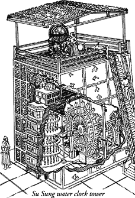

Die erste vollmechanische Uhr wurde von einem chinesischen Ingenieur gebaut: eine Wasser betriebene Vorrichtung mit Teilen, welche die Uhr ein tickendes Geräusch von sich geben ließ. Die Entwicklung der mechanischen Uhr spielte eine wichtige Rolle, die frühen Computer und Rechenmaschinen übernahmen diese Technologie der Zahnrad- und Federvorrichtungen.